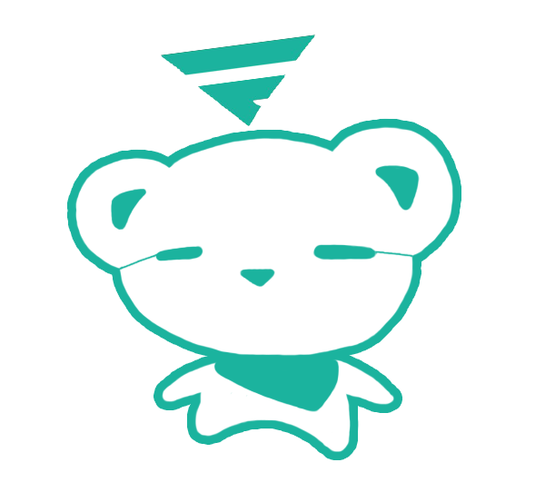
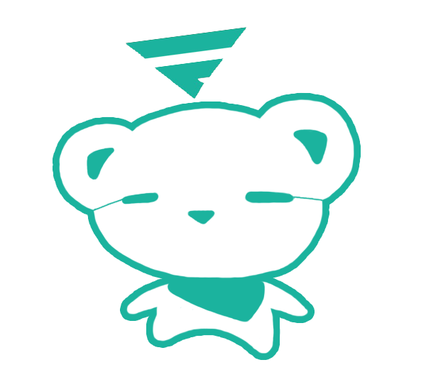

FASTERCON
FASTERCON is our annual conference focused on highlighting and strengthening the network of Filipino American technology professionals in the Bay Area.
Every year, FASTERCON is held during Filipino American (Our)Story Month. FASTERCON 2017 will be held on Saturday, October 14, 2017 at Martin Luther King Junior Student (MLKJ) Student Union - Pauley Ballroom in UC Berkeley. (See detailed agenda below).
FASTERCON is the inaugural annual conference hosted at UC Berkeley by FASTER (Filipino Americans in Silicon Valley Tech) which aims to create, connect, and cultivate a valuable movement of Filipino Americans in the technology industry, with a focus on the San Francisco Bay Area / Silicon Valley.
Every year, our conference highlights and celebrates the work of leading Filipino American technology professionals making an impact on the tech industry and seeks to strengthen our collective and tech professional network.
One of FASTER's main components, education, focuses on cultivating our mentorship program (currently serving UC Berkeley and Stanford students) encouraging more Filipinx Americans to enter tech careers.
This event is co-organized by FASTER, UC Berkeley PASAE (Pilipino Association of Scientists, Architects and Engineers), UC Berkeley PASS (PilipinX Academic Student Services), UCB PAAC (Cal Pilipino American Alumni Chapter), Stanford Pilipino American Student Union (PASU), and Stanford Pilipino Alumni Network (SPAN) and sponsored by: Philippine Development Foundation (PhilDev), STAC-SV (Science & Technology Advisory Council).
The agenda will include several workshops on branding and professional development, panels about entrepreneurship and engineering, special DJ performance and talk by YogaFrog (THUD Rumble) and an evening community networking mixer featuring Virtual + Augmented + Mixed Reality (AR VR MR XR) artists + developers.
This event is open to all - students (open to other college level students outside of UC Berkeley and Stanford), technology professionals, entrepreneurs and allies and supporters of the Filipino American community in the Bay Area.
Co-Organizers
Sponsors
FASTERCON is open to all - students, technology professionals, entrepreneurs and allies and supporters of the Filipino
American community in the San Francisco Bay Area/Silicon Valley. If you are interested in partnering with us for FASTERCON 2017, reach out to us through any of the communication channels below.
 
